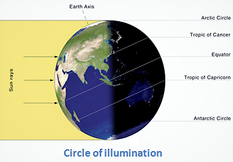
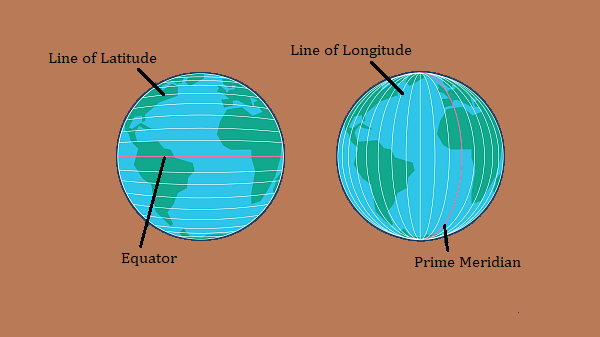
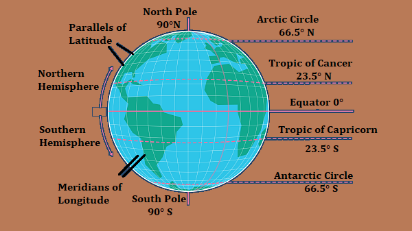
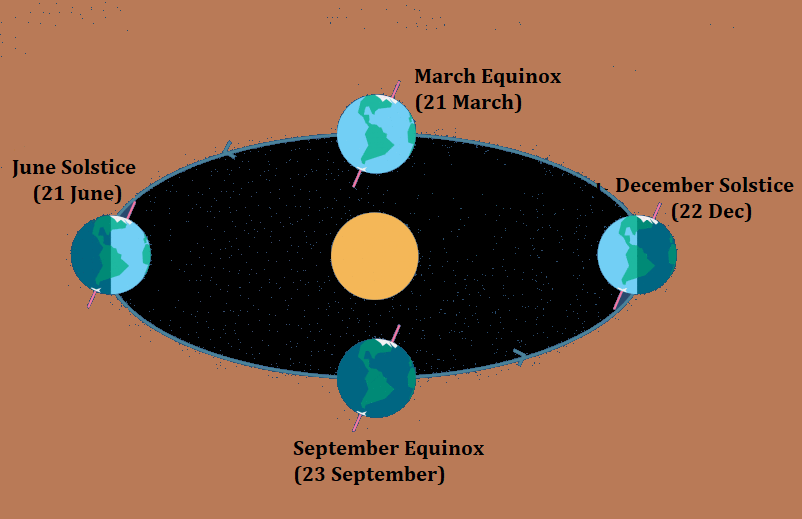
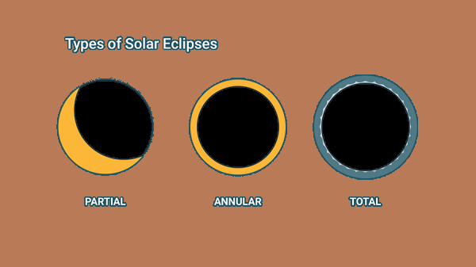

The Earth
Our Home Planet, Earth is the third planet from the sun, the
densest planet in our solar system, fifth-largest of the eight
planets and the largest of the four terrestrial planets. Since
71% of earth's surface is made up of water, it is called
"Blue Planet.
Earth has a radius of 6,371 kilometers. It revolves around the
sun at an average distance of 150 million kilometers (1
Astronomical Unit).
Time taken by light from the Sun to reach our planet
Since speed of light = 3 lakh km/s.
| Time taken by Sunlight to reach Earth |
= |
Distance between Sun & Earth
Speed of light
|
|
= |
150,000,000 km
300,000 km/s
|
Therefore, it takes 500 seconds or 8 minutes and 20 seconds
for sun light to reach earth.
Note: This is an average number. Remember, the Earth
follows an elliptical orbit around the Sun. At its closest
point i.e., perihelion (147 million km), sunlight only takes
490 seconds to reach Earth. And at the most distant point
i.e., aphelion (152 million km), it takes 507 seconds for
sunlight to make the journey.
Geological History of Earth
Earth was formed about 4.6 billion years ago by accretion from
the solar nebula, a disk-shaped mass of dust and gas left over
from the formation of the Sun, which also created the rest of
the Solar System.
The geological history of Earth is studied from the fossils of
animals found in planet's rock layers (stratigraphy). The
Geologic Time Scale is divided into Eons > Eras > Periods >
Epochs. For simplicity, we won't be discussing each period and
epoch separately.
The geological history is broadly divided into two periods: the
Precambrian Super-Eon and the Phanerozoic Eon.
Precambrian Super-Eon
It includes approximately 90% of geologic time starting from 4.6
billion years ago to the beginning of the Cambrian Period (about
541 Ma). This Super-Eon includes three eons, the Hadean,
Archean, and Proterozoic.
Hadean Eon (4.6 - 4 billion years ago)
-
It begins with the very formation of the Earth itself, around
4.6 billion years ago and ends 4 billion years ago. Earth was
initially molten due to extreme volcanism and frequent
collisions with other bodies.
-
Named after the Greek underworld Hades, the Hadean lived up to
its name. The planet was wracked by volcanic activity, cosmic
bombardments, raging storms, and temperatures that were at
times hot enough to melt rock.
-
The Moon formed soon afterwards, possibly as a result of the
impact of a large planetoid with the Earth.
-
This is the only Eon that doesn’t have fossils. Outgassing and
volcanic activity produced the primordial atmosphere.
Condensing water vapor, augmented by ice delivered from
comets, produced the oceans within 500 million years from the
formation of the earth.
-
Hadean zircon is the oldest-surviving crustal material from
the Hadean eon.
Archean Eon (4 billion to 2.5 billion years ago.)
-
During this time, the Earth's crust cooled enough that rocks
and continental plates began to form.
-
Named after the Greek word for ‘origin’, the Archean was once
thought to be when the first signs of life appeared. But at
the very least, it’s fair to say it was the first time that
life flourished, forming mats of microbes in the primordial
seas.
-
The fossils that these microbes left behind are called
stromatolites (or stromatoliths), and the very oldest of them
-- like those found in western Australia -- date from the
Archaean.
-
During this time, the atmosphere was mostly carbon dioxide.
Proterozoic Eon (2,500 to 541 million years ago):
-
Proterozoic means ‘earlier life’. Around this time,
photosynthetic bacteria, along with some multicellular forms
of life, filled atmosphere with Oxygen. This probably wiped
out much of the anaerobic life on Earth and gave rise to
ancestral Eukaryotes, whose cells each have a nucleus and
organelles wrapped up in membranes.
-
Roughly 750 million years ago, the earliest-known
supercontinent Rodinia, began to break apart. The
continents later recombined to form Pannotia, 600–540
Ma.
-
The first-known glaciations occurred during the Proterozoic,
climaxing with the Snowball Earth.
Phanerozoic (means ‘visible life) Eon (541 Ma - Present)
The Phanerozoic Eon is the current eon in the geologic
timescale. It covers roughly 541 million years. It is divided
into three eras – the Paleozoic, the Mesozoic and the Cenozoic.
Paleozoic Era (542 Ma - 251 Ma)
-
It starts shortly after the breakup of a supercontinent called
Pannotia and at the end of a global ice age.
-
This period starting with Cambrian explosion, was
defined by the explosion and diversification of visible life.
Life, which upto this point, existed in ocean, now also
started on land.
-
Throughout the early Paleozoic, the Earth's landmass was
broken up into a substantial number of relatively small
continents. Toward the end of the era the continents gathered
together into a supercontinent called Pangaea, which
included most of the Earth's land area. It was surrounded by
the superocean Panthalassa.
-
This period ended in cataclysm known as the
Great Dying which was the most severe extinction in our
planet’s history. But its exact cause is still unclear.
Mesozoic Era (252 to 66 million years ago)
-
During this period, Pangaea gradually split into a northern
continent, Laurasia, and a southern continent,
Gondwana separated by Tethys sea.
-
This period was dominated by the reptiles. This is when they
took some of their most famous forms, including dinosaurs,
pterosaurs, and a variety of marine species. And many modern
groups of organisms also evolved like mammals frogs, bees, and
flowering plants.
-
But the Mesozoic Era came to an end 66 million years ago, with
yet another episode of devastation, known as the
Cretaceous-Paleogene, or K-Pg, Extinction Event. A gigantic
asteroid that struck the earth, sending out enormous amounts
of ash into the atmosphere, blocking out sunlight, and
creating a vicious cold snap across the planet.
-
Without the sun’s energy, entire plant communities died, and
the animals that relied on those plants perished with them.
Evidence of this impact can be found in a layer of iridium, in
rocks dating to the end of the Mesozoic. Iridium is an element
that’s rare on Earth, but very common in asteroids and comets.
-
Near the end of Mesozoic, Pangaea completed its breakup into
present day continents, although their positions were
substantially different at the time.
-
Laurasia brokeup into present day North America and Eurasia.
-
Gondwana brokeup into present day South America, Africa,
Australia, Antarctica and the Indian Subcontinent, which
later collided with the Asian plate. This impact gave rise
to the Himalayas.
Cenozoic Era (66 million years ago - present)
-
This era marks the rise of the mammals. Soon after the K-Pg
extinction, the climate warmed, and jungles stretched across
the planet. Mammals quickly recovered and by 40 million years
ago, most of the mammal groups that we recognize had come
about, like whales, bats, rodents and primates.
-
This period is divided into three periods: Paleogene, Neogene,
and Quaternary. Quaternary is the current period with two
epochs:
-
Pleistocene Epoch (2.588 million years ago to 11,700
years ): The Earth entered a glacial period. This epoch is
famously referred to as The Ice Age. Many animals
evolved including mammoths, giant ground sloths, dire
wolves, saber-toothed cats, and most famously
Homo sapiens. 100,000 years ago marked the end of one
of the worst droughts in Africa, and led to the expansion of
primitive humans. As the Pleistocene drew to a close, a
major extinction wiped out much of the world's megafauna,
including some of the hominid species, such as Neanderthals.
-
Holocene Epoch (11,700 years ago to present): The
last major glaciation was over, and modern humans inhabited
nearly all corners of the globe.
Note: We belong to Holocene Epoch, Quaternary Period,
Cenozoic Era and Phanerozoic Eon.
Movement of Earth
Earth has two kinds of motions: Rotation and Revolution.
-
Rotation is the movement of earth around its own axis from
West to East, once in every 24 hours. It causes day and
nights.
-
Revolution is the movement of earth around the Sun in an
elliptical orbit, once in every 365 1/4 days. It causes the
seasons and years.
Rotation of Earth
The Earth spins, or rotates, on an imaginary axis that
runs from the North Pole through the center of the planet to the
South Pole.
It takes the Earth just under 24 hours (approximately), or one
day, to spin once on its axis. At the equator, the Earth is
actually spinning at about 1600 kilometers per hour. This
rotational speed goes on decreasing from equator to poles where
it becomes almost zero.
Earth's rotation has the following implications:
- Causation of Day and Night.
- Change in direction of winds and ocean currents.
- Rise and fall of tides every day.
-
A difference of time of one hour between the two meridians
which are 15o apart.
At any given time, only one half of the earth faces the sun
which experiences day, while the other half experiences night.
The circle that divides these two halves is called the
Circle of Illumination.

Revolution of Earth
The Earth travels on a 940 million kilometer path around the
Sun, called an orbit. One complete orbit is a revolution, which
takes 365 and 6 hours. The surplus is added as an extra day
(leap day) every 4 years.
Earth’s orbit is actually elliptical, like a slightly
stretched-out circle. This means that the distance between the
Earth and Sun varies a bit throughout the year.
-
Specifically, the Earth is nearest the Sun (147 million), or
at perihelion, in January.
-
Earth is almost five million kilometers farther away from the
Sun at aphelion, in early July.
Earth's revolution has the following implications:
- Change of Seasons.
-
variation of the length of the days and nights at different
times of the year.
- shifting of wind belts.
Tilt of the Earth's Axis
-
The Earth actually tilts 23.5 degrees away from a line
perpendicular to the plane of the ecliptic ( the imaginary
plane that contains Earth’s orbit).
-
This probably happened after some other space object knocked
into Earth billions of years ago.
-
If the Earth did not tilt, there would be no seasons and the
length of day and night would be exactly the same across the
globe.
Latitudes, Longitudes, Time Zones and Seasons
Latitudes and Longitudes
In order to pinpoint any location on Earth, cartographers and
geographers traced horizontal and vertical lines (morelike
circles) called latitudes and longitudes respectively, on
Earth's surface.
Together, they form the Earth’s geographical coordinates, and
represent the angular distance of any location from the center
of the Earth. Both latitudes and longitudes are measured in
degrees (°), minutes (′) and seconds (′′)
Note: There are 60 minutes in a degree and 60 seconds in
a minute.

Latitudes
-
Often called parallels or circles of latitude, latitudes are
imaginary circles parallel to the Equator.
-
The Equator is an imaginary line perpendicular to
earth's axis. It is equidistant from the North and South
Poles, and divides the globe into the
Northern Hemisphere and the Southern Hemisphere.
-
Latitudes specify the north-south position of a location from
the equator on the globe.
-
Locations in the Northern Hemisphere are identified by
northern latitudes and are assigned a suffix of N for north.
-
Southern Hemisphere locations, on the other hand, are on
southern latitudes and are assigned a suffix of S for south.
-
The equator is considered as Zero degrees latitude. Since the
distance from the equator to either of the poles is one-fourth
of a circle round the earth, it will measure ¼th of 360
degrees, i.e. 90°. Thus, 90° north latitude (N) marks the
North Pole and 90° south latitude (S) marks the South Pole.
- Important Parallels of Latitudes are:
- Equator (0°)
- Tropic of Cancer (23.5° N or 23°26′ N to be exact)
- Tropic of Capricorn (23.5° S or 23°26′ S to be exact)
- Arctic Circle (66.5° N or 66°33′ N to be exact)
- Antarctic Circle (66.5° S or 66°33′ S to be exact)
- North Pole (90° N)
- South Pole (90° S)

Latitudes and Longitudes
Heat Zones of Earth
Tropical or Torrid Zone: The mid-day sun is exactly
overhead at least once a year on all latitudes in between the
Tropic of Cancer and the Tropic of Capricorn. It, therefore,
receives the maximum heat.
Temperate Zones: The mid-day sun never shines overhead
on any latitude beyond the Tropic of Cancer and the Tropic of
Capricorn. The angle of the sun’s rays goes on decreasing
towards the poles. They have moderate temperatures.
Subtropical zones or Subtropics are a part of temperate
zones extending between 23°30′ and approximately 35° in the
northern hemisphere and in the southern hemisphere.
Frigid Zones: Areas lying between the Arctic Circle
and the North Pole in the Northern Hemisphere and the
Antarctic Circle and the South Pole in the Southern
Hemisphere, are very cold. It is because here the sun does not
rise much above the horizon.
Longitudes
-
Often called Meridians of Longitudes, Longitudes are imaginary
circles parallel to the Prime Meridian. They extend from pole
to pole passing through the equator.
-
Prime Meridian: Unlike, latitudes, there is no obvious
central longitude. Hence, the meridian line through Royal
Observatory at Greenwich, England, is considered as the
reference point for longitudes. This line is also known as the
Prime Meridian.
-
The meridian opposite the Prime Meridian (on the other side of
the Earth) is the 180° longitude and is known as the
antimeridian or the
International Date Line (IDL).
-
The Prime Meridian is set as 0° longitude and it divides the
Earth into the Eastern and the Western Hemispheres.
-
Longitudes specify the east-west position of a location from
the Prime Meridian on the globe.
-
Locations in the Eastern Hemisphere are identified by
Eastern Longitudes and are assigned a suffix of E for east.
-
Western Hemisphere locations, on the other hand, are on
Western Longitudes and are assigned a suffix of W for west.
Longitudes and Time Zones
-
When the Prime Meridian of Greenwich has the sun at the
highest point in the sky, all the places along this meridian
will have mid-day or noon
-
Since the earth rotates from west to east, those places east
of Greenwich will be ahead of Greenwich time and those to the
west will be behind it.
-
The Time along a longitude is calculated this way - the earth
rotates 360° in about 24 hours, which means 15° an hour or 1°
in four minutes. Thus, when it is noon at Greenwich, the time
at 15° east of Greenwich will be 15 × 4 = 60 minutes or 1 hour
ahead of Greenwich time and at 15° west of Greenwich, the time
will be behind Greenwich time by one hour.
Standard Time:
-
Since a country has many meridians passing through it, the
local time of places which are on different meridians is bound
to differ.
-
In India, for instance, there will be a difference of about 1
hour and 45 minutes in the local times of Dwarka in Gujarat
and Dibrugarh in Assam.
-
Therefore, in India, the longitude of
82½° E (82° 30' E) is treated as the standard meridian.
The local time at this meridian is taken as the standard time
for the whole country. It is known as the
Indian Standard Time (IST).
Seasons
To recap the movement of earth, We’ve got Earth rotating on a
tilted axis, pointing in a particular direction, on an
elliptical orbit, with solar energy hitting the surface at
different angles. This movement of Earth causes seasons.

December Solstice (December 22nd)
Around December 22nd, or the December Solstice, the South Pole
is tilted towards the Sun. Everything south of Antarctic Circle
(66.5° S) receives 24 hours of daylight. And at noon, the Sun’s
rays will be directly overhead the Tropic of Capricorn (23.5°
S). This is the strongest insolation the Southern Hemisphere
receives, and it’s the peak of summer.
But the tilt of the Earth means that on the December Solstice,
the North Pole is tilted away from the Sun. Everything north of
Arctic Circle (66.5° N)experiences a full 24 hours of darkness.
With weak insolation, the Northern Hemisphere is in winter.
March Equinox (March 21)
Near March 21, or the March equinox, the Earth’s axis isn’t
tilted toward or away from the Sun, bringing all locations on
Earth equal hours of day and night. Spring has arrived in the
Northern Hemisphere and this is the first official day of
fall/autumn in the Southern Hemisphere.
June Solstice (June 21st)
Around June 21st, the exact opposite conditions from the
December Solstice prevail. The North Pole is tilted towards the
Sun. Everything north of Arctic Circle (66.5° N) receives 24
hours of daylight. And at noon, the Sun’s rays will be directly
overhead the Tropic of Cancer (23.5° N). This is the strongest
insolation the Northern Hemisphere receives, and it’s the peak
of summer.
The South Pole is tilted away from the Sun. Everything South of
Antarctic Circle (66.5° S) experiences a full 24 hours of
darkness. With weak insolation, the Southern Hemisphere is in
winter.
September Equinox (September 23)
Around September 21st, Once again, the Earth’s axis isn’t tilted
toward or away from the Sun, so the poles have equal hours of
night and day. Only this time, it's fall in the Northern
Hemisphere and spring in the Southern Hemisphere.
Eclipses
An Eclipse Occurs when the Sun, the Moon and the Earth are in a
Straight line. There are two types of eclipses:- Solar Eclipse
and Lunar Eclipse.
Solar Eclipse
Solar Eclipse happens when a new moon moves between the Earth
and the sun, blocking some or all of the sun's rays from
reaching the Earth. By cosmic chance, even though the sun is 400
times wider than the moon, it's also 400 times farther away.
Therefore, the two objects appear the same size in our sky.
When the moon eclipse the sun, it casts two types of shadows on
Earth: a smaller, darker shadow, known as the umbra, and a
larger shadow, known as the penumbra.
There are four types of solar eclipses:
-
The first and most spectacular is a total eclipse, when
the moon completely covers the sun's surface. A total eclipse
can only be seen if you're standing within the umbral shadow.
The imaginary line created by umbral shadow as it races across
Earth is known as the path of totality.
-
People within the penumbral shadow see only a
partial eclipse, the second type. From this view,
outside the path of totality, the moon passes in front of the
sun off-center, never fully covering its surface.
-
Third, an annular eclipse, occurs when the moon passes
directly in front of the sun. However, unlike a total eclipse,
the moon appears too small to fully cover the sun. The moon's
orbit is elliptical, so sometimes it's closer to Earth
(perigee) and sometimes it's farther away (apogee).
-
Last, a hybrid eclipse, is when the moon's position
between the Earth and sun is so finely balanced that the
curvature of the Earth plays a role. The moon will be farther
away from some parts of Earth along the eclipse's path,
resulting in an annular eclipse. In other parts, the moon will
be just close enough to fully cover the sun, resulting in a
total eclipse.

Types of Solar Eclipses
While a total solar eclipse happens somewhere on Earth every
year or two, any given point on Earth experiences the event only
about once every 400 years.
The moon moves about one and a half inches away from Earth each
year. It's estimated that in about a billion years, the moon
will be too far away from Earth to completely cover the sun.
Lunar Eclipse
A lunar eclipse happens when the earth blocks some or all of the
sun's direct light from reaching the moon. This cosmic event
only takes place during a full moon, which happens once every 29
and a half days.
When the earth eclipse the sun, it casts two types of shadows on
the moon, a larger shadow, known as the penumbra, and a
smaller, darker shadow, known as the umbra.
There are three types of lunar eclipses:
-
A total lunar eclipse occurs when the sun, moon, and
earth are in perfect alignment and the moon falls within the
earth's umbral shadow. They turn the moon a sunset red.
-
A partial lunar eclipse occurs when the earth, moon,
and sun don't perfectly align, so only part of the moon passes
into earth's umbra. Earth's shadow appears very dark on the
side of the moon facing earth.
-
Last, a penumbral lunar eclipse, occurs when the moon
passes through earth's penumbral shadow. The event is so
subtle that most people don't even notice. The moon will
appear just slightly darker than normal.
As the moon inches away from the earth each year, one day,
billions of years from now, the moon will be too far away to
fall completely within earth's umbral shadow.
Why isn't there an eclipse every month?
If earth's orbit around the sun and the moon's orbit around
the earth were truly lined up perfectly, this would be the
case. But the reality is that they're not lined up.
So, if you follow the orbit of the moon as it goes around the
Earth, sometimes it's above the plane of the ecliptic and
sometimes it's below. So the shadow cast by the moon misses
the Earth, or the shadow cast by the Earth misses the moon.
But other times, the sun, moon and Earth are aligned, and we
get eclipses. In fact, eclipses tend to come in pairs, with a
solar eclipse followed by a lunar eclipse, because everything
is nicely aligned.